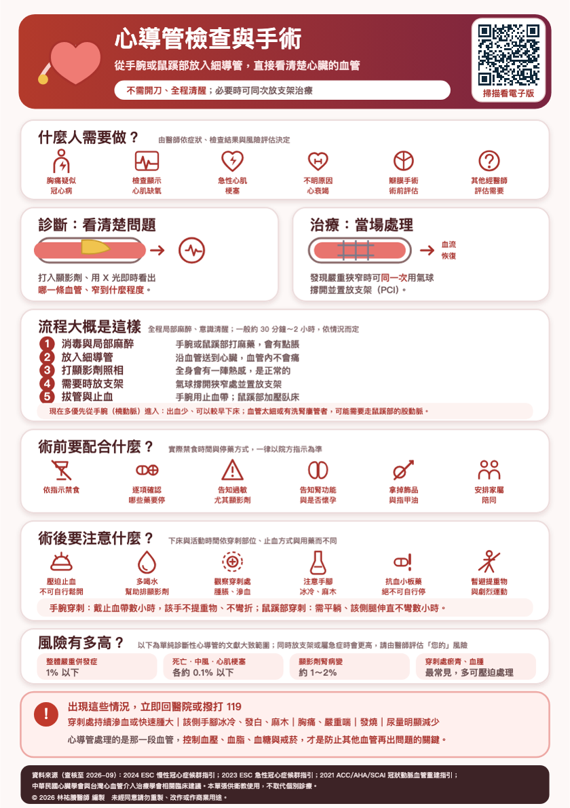

🏠
回家之後怎麼照顧？
主題 10／11傷口方面，保持清潔乾燥。可以碰水的時間依照醫療團隊的指示，各家做法不同。每天看一次傷口，注意有沒有紅腫熱痛或滲血。
活動方面，走手腕的人，那隻手幾天內避免提重物跟用力撐；走鼠蹊部的人，幾天內避免蹲下、爬樓梯跟提重物。
開車跟上班的時間，要看您做的是單純檢查還是有放支架，請依照醫師的指示。
最重要的是藥。如果有放支架，抗血小板藥絕對不可以自己停，可能造成支架內急性血栓，後果嚴重。
另外要多喝水幾天，幫助顯影劑排乾淨。下載原始 A5 衛教單查看原始衛教圖卡

點選圖卡可開啟大圖。原稿來源與說明
資料來源（查核至 2026 年 10 月）：
2024 ESC 慢性冠心症指引；2025 ACC/AHA 急性冠心症指引；
2021 ACC/AHA/SCAI 冠狀動脈血運重建指引；中華民國心臟學會相關指引。本單張供衛教，不取代個別診療。
© 2026 林祐賸醫師 編製 未經同意請勿重製。